Op deze pagina zijn de opdrachten te vinden welke passend zijn bij de lesstof welke tijdens de Arduino workshop zijn behandeld
Voor opdracht 3b was het de bedoeling om twee led lampjes tegelijk te laten knipperen. De code en de video die bij deze opdracht horen zijn hieronder te bekijken. 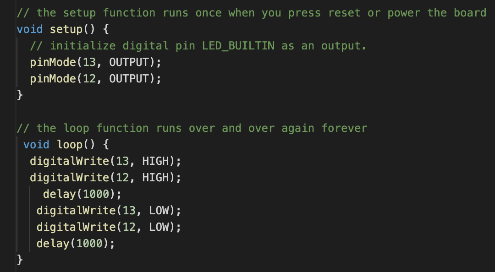
Voor opdracht 4c was het de bedoeling om twee led lampjes langzaam aan en uit te laten gaan. Waneer het ene led lampje dooft, gaat de andere aan. De code en de video die bij deze opdracht horen zijn hieronder te bekijken. 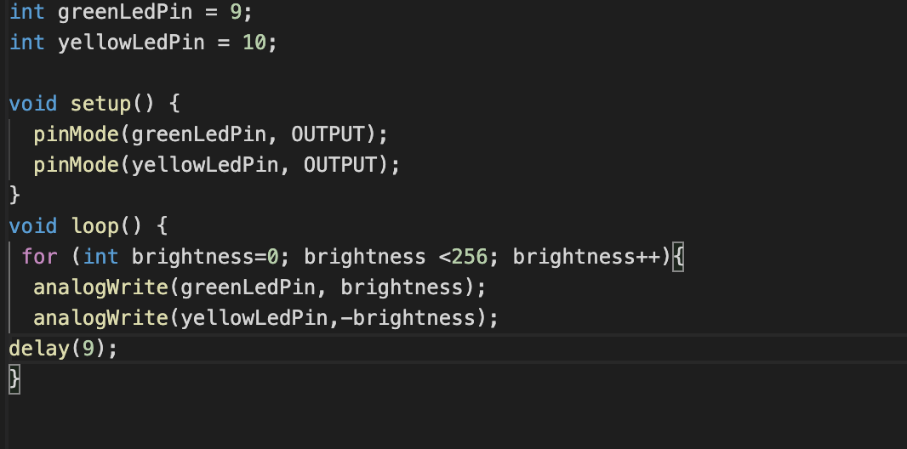
Voor opdracht 6c was het de bedoeling om twee led lampjes aan te zetten en te laten doven, door middel van een pot-meter. De code en de video die bij deze opdracht horen zijn hieronder te bekijken. 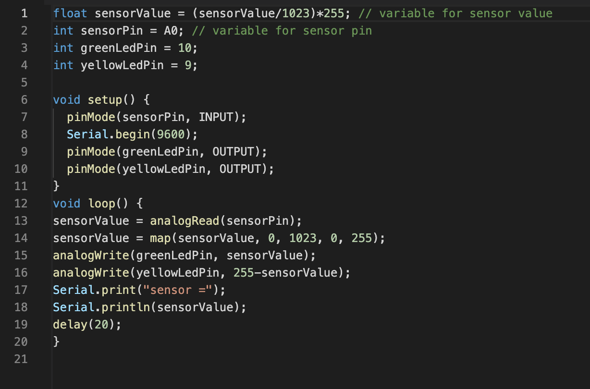
Voor opdracht 7a was het de bedoeling om een smiley en een sad face te automatisch af te wisselen op de led-matrix. De code en de video die bij deze opdracht horen zijn hieronder te bekijken. 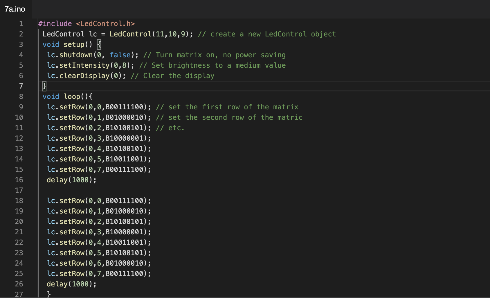
Deze opdracht hoefde eigenlijk niet in het portfolio maar ik vond het heel leuk om met de led-matrix te spelen. De code en de video die bij deze opdracht horen zijn hieronder te bekijken. 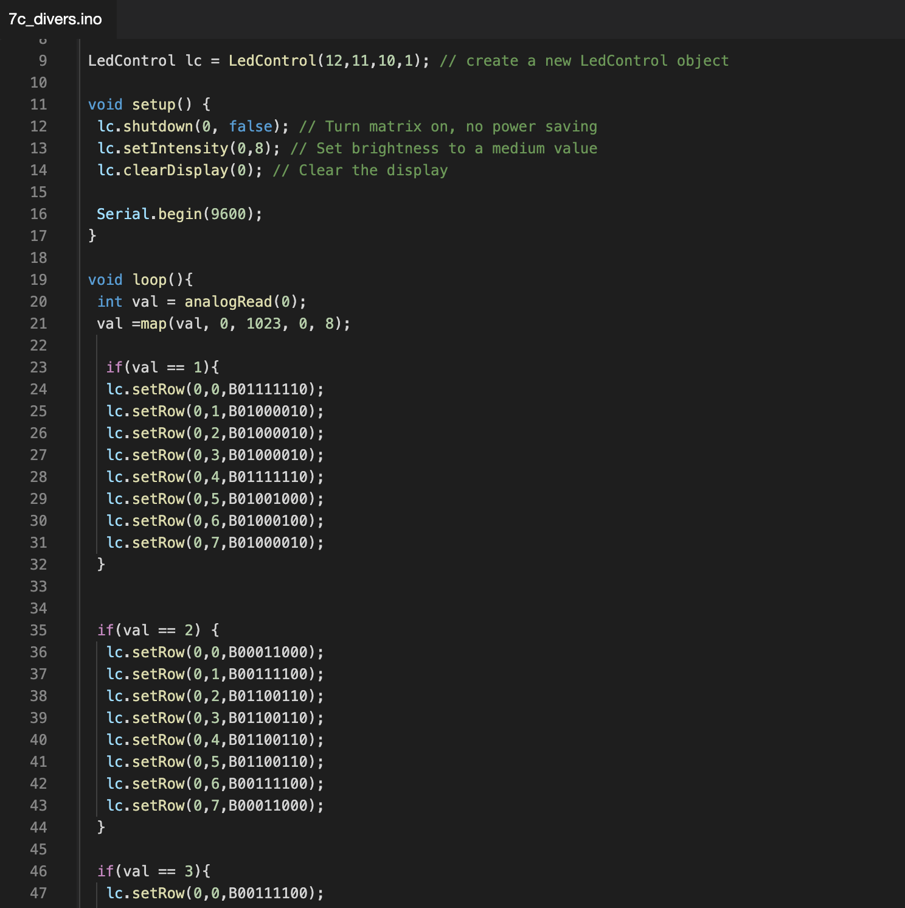
Deze opdracht hoefde eigenlijk niet in het portfolio maar ik vond het leuk om met het geluidselement te spelen om een melodie te creëren. De code en de video die bij deze opdracht horen zijn hieronder te bekijken. 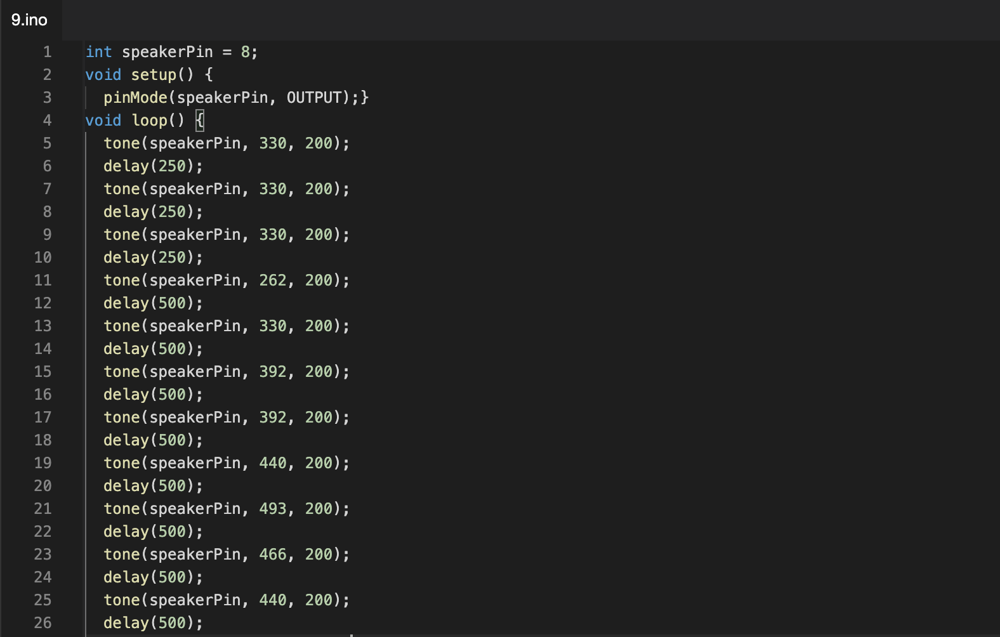
Voor opdracht 9c was het de bedoeling om een alarm te maken. De code en de video die bij deze opdracht horen zijn hieronder te bekijken. 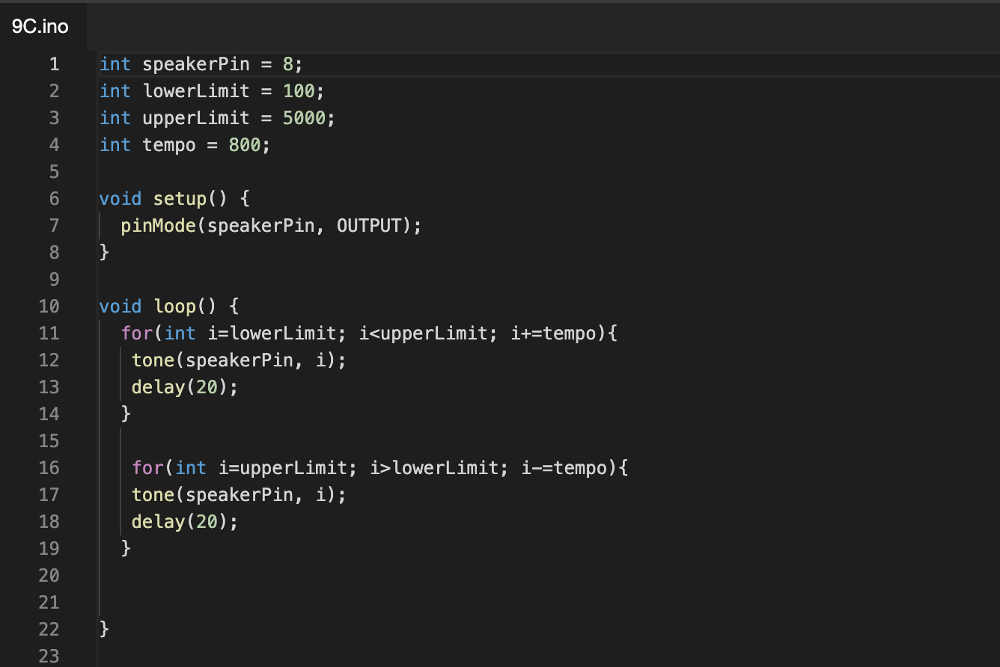 >
Voor opdracht 11c was het de bedoeling om te werken met een afstandsmeter, als er een object binnen 5cm van de senor staat zal het lampje uit gaan. De code en de video die bij deze opdracht horen zijn hieronder te bekijken. 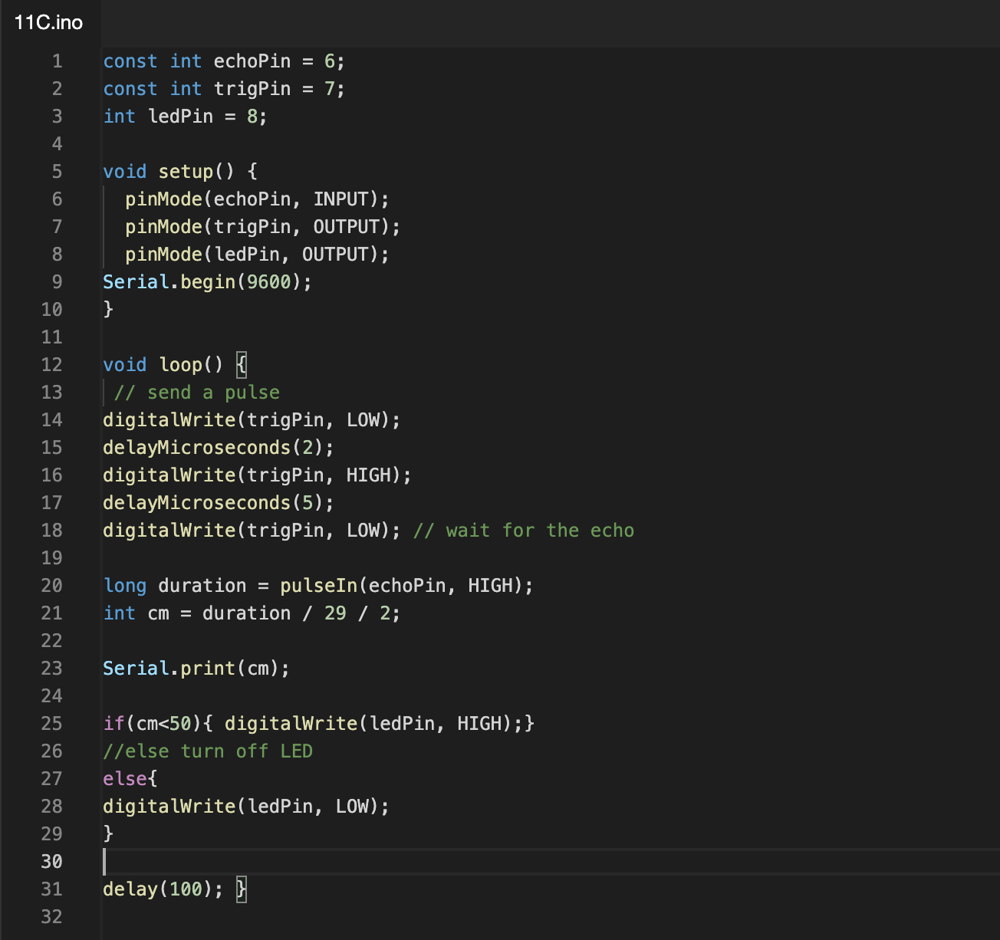
Voor opdracht 14b was het de bedoeling om het led-lampje standaard te laten branden totdat er op de knop gedrukt word. De code en de video die bij deze opdracht horen zijn hieronder te bekijken. 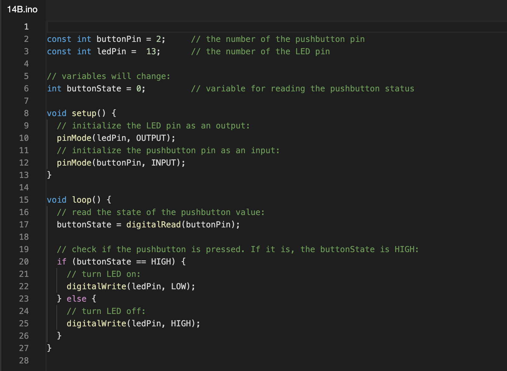
Voor opdracht 15b was het de bedoeling om de servo motor te laten dansen. De code en de video die bij deze opdracht horen zijn hieronder te bekijken. 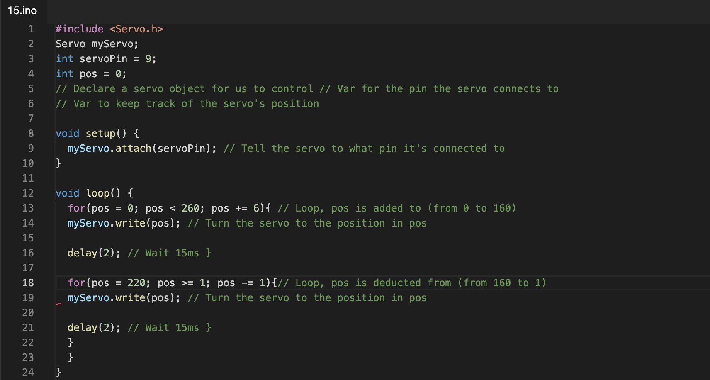
Voor opdracht 16d was het de bedoeling om gebruik te maken van een captive sensor. Mijn captive sensor deed het steeds wel of niet terwijl sketch aangaf dat de code correct was, ik was super in de war en heb zo lang dingen geprobeerd en het circuit verbeterd. Uiteindelijk kwam ik erachter dat het geheel werkte als ik het aliminiumfolie en mijn laptop tegelijkertijd aanraakte. De code en de video die bij deze opdracht horen zijn hieronder te bekijken. 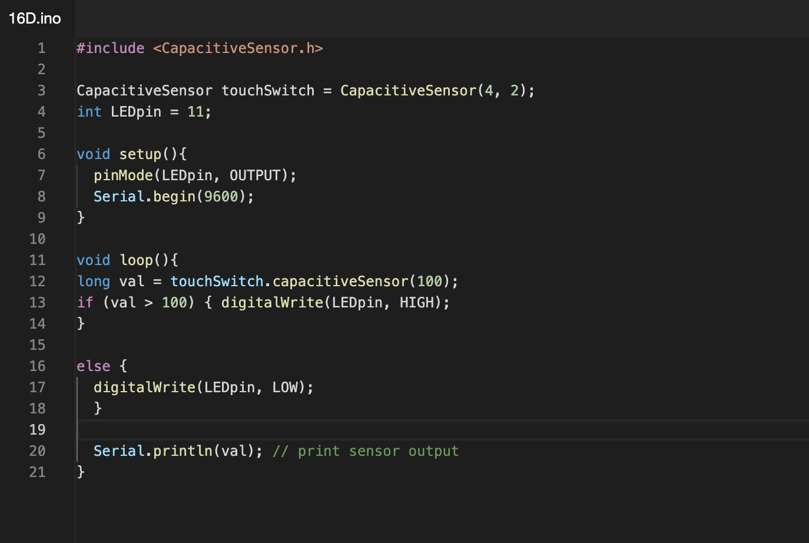